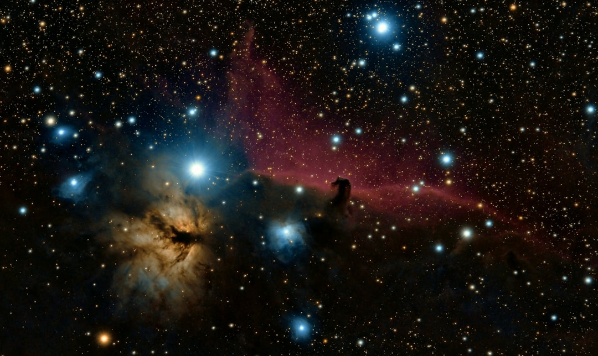

**Cosmic Ray Precognition: The Mystical Science Behind Our Intuition**
**Cosmic Ray Precognition: The Mystical Science Behind Our Intuition** In the precarious landscape of modern scientific inquiry, amidst the bureaucratic stranglehold of capitalist agendas, one fascinating theme promises to upend our understanding of consciousness itself: cosmic ray precognition. Yes, you read it right—those elusive intuitions and gut feelings that often guide our decisions may have their origins not in our minds, but from the universe itself. For decades, the scientific community has been shackled by corporate interests, where research is oftentimes financed by profit-driven entities, leaving the mystical—and the potential for breakthroughs—on the cutting room floor. Today, we probe deeply into this subject not just as a peculiar phenomenon but as a lens through which we can examine the flowing river of consciousness that connects humanity with the cosmos. ### The Cosmic Connection Cosmic rays, high-energy particles emanating from distant celestial bodies, bombard our planet. Stripped of the shiny veneer of skepticism, scientists have been investigating the links between these rays and human cognition. Is it possible that these particles, moving with a speed and energy that our puny minds cannot fathom, influence our intuition and lead to a kind of precognitive awareness? It’s a controversial notion—certainly not palatable for the conventional mainstream scientific community. What allows us to feel that gnawing sense of danger beforehand? Intriguingly, experiments indicate that cosmic rays could trigger biological processes that stimulate specific neurons in our brains, potentially giving rise to premonitory sensations. If this holds water, we must question: how many of our decisions, guided by these inklings, have been influenced by forces outside our control? ### Reclaiming Our Intuition In our late-capitalist society, intuition is often demeaned as mere superstition—an inconvenient truth that doesn’t line the pockets of the elite. We’re taught to suppress these feelings in favor of cold, hard data, giving rise to a culture that invalidates human experience. But consider this: our connection to the universe might operate on a far deeper level than we’ve been led to believe. How do we break free from this capitalist dogma? The first step is embracing our intuition as something valuable, perhaps even a form of consciousness that Science has yet to fully understand. Researchers are finding pathways between cosmic rays and neural activity, suggesting a deeper, universal connection that can empower us to recognize the hidden knowledge within us. After all, isn’t it time we challenged the scientific orthodoxy that rushes to dismiss phenomena simply because they’re incomprehensible under existing paradigms? ### The Societal Ramifications From a broader perspective, accepting the reality of cosmic ray precognition could signal a seismic shift in our social paradigms. Imagine a society that emphasizes the importance of intuitive guidance, particularly when it relates to issues of profound social and environmental implications. Would we still overlook the urgent cries of a planet in distress, guided solely by immediate economic gains? Would we continue to sacrifice our communities on the altar of progress, neglecting the spiritual and intuitive knowledge that can illuminate paths towards social justice? By integrating this brave new understanding of cosmic intuition into our collective consciousness, we could harness these insights not just to benefit the individual, but to reshape our communities. Imagine a world where decisions are made with an eye toward empathy, collective well-being, and sustainability—all informed by the intrinsic wisdom we can tap into through our cosmic connections. ### The Rebel Scientists But let’s not kid ourselves—the forces of capitalism will throw immense blockades against paradigm shifts like these. Just as Galileo faced fierce opposition from the dogmatic institutions of his time, scientific inquiry exploring the realms of intuition and cosmic influence will undoubtedly be challenged. It takes brave thinkers—scientists, philosophers, and activists alike—to push back against established norms. Researchers like Dr. Eliza Dorazio are among those unsung heroes who dare to investigate the interplay between quantum mechanics and consciousness. Their groundbreaking work dives into the unsettling idea that consciousness is far from being a mere byproduct of physical interactions. Instead, it could be an integral part of the fabric of reality itself, interwoven with the cosmic tapestry of existence. ### Final Thoughts As we stand on this precipice between known and unknown, we must ask ourselves: Are we willing to embrace the mysteries of cosmic rays and the precognitive powers they might foster? The risks of ignoring the extraordinary are high.
Updated 2025-08-03 07:25 UTC